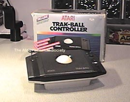

The Atari CX-22 PROLINE
TrakBall

]
The Atari CX-22 Proline Trakball controller was designed for the XL series
of home computers and was dressed in XL Brown/Creme colors.
It had a switch on the left side to set it from Trakbal to Joystick mode
so you could choose which way you wanted to use the trakball.
Just like the 5200 Trakball, this was a very well designed, comfortable
and reliable product.
Atari
Trakball Concepts (A look at the original Designs)